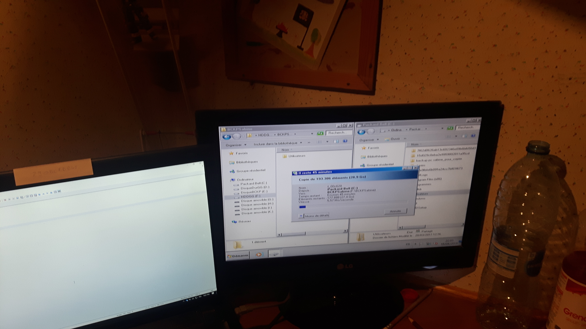
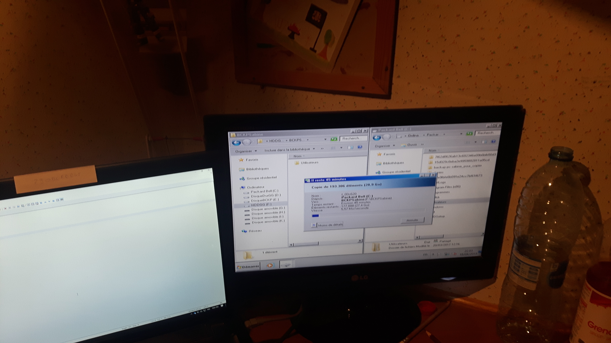

Portfolio
Durant toutes mes années d'études, je ne me suis pas limité à mes cours. J'avais également des activités extrascolaires qui m'ont permis d'acquérir des compétences à la fois liées au domaine de l'informatique ou utiles dans ma vie personnelle et professionnelle
Activités
Réparations bénévoles
Dans le cadre de mon bénévolat pour le Repair Cafe de Ath, j'ai commencé par travailler dans la section vélo et je réparais ceux-ci. Cependant, vu le manque de travail et le débordement à la section ordinateur, je me suis mis à les aider. C'est ainsi que j'ai pu dépanner des personnes ne sachant plus démarrer leur machine mais voulant tout de même récupérer les fichiers présents sur leur machine. Pour ce faire, j'utilise essentiellement Linux et un disque dur externe. Par la suite, afin de remettre la machine en ordre de marche, je réinstalle un système d'exploitation (Windows ou Linux) puis recopie les fichiers sauvegardés précédemment.
Parfois les réparations étaient plus longues car il s'agissait de remplacer un disque dur déféctueux ou même d'augmenter la mémoire.
J'ai également utilisé ces techniques sur les ordinateurs portables d'amis afin de les dépanner dans les plus brefs délais.
 

Certification SCRUM
A la suite des cours de Gestion de projet et vu mon grand intéret pour les méthodes Agile, j'ai eu l'occasion de participer à un séminaire à ce sujet. A la fin de cette journée de cours, nous avons eu l'occasion de passer la certification de SCRUM Master.

Formations en ligne
Ayant suivi des études générales, mon seul cours d'informatique se résumait à du traitement de texte. Etant de nature plus curieuse, je me suis renseigné sur différents langages de programmation et des formations en ligne. Durant mes études, il m'est arrivé de suivre ces formations en préambule de mes cours ou pendant afin d'augmenter mes acquis quant à ces langages. J'ai commencé sur le "Site du zéro" avant de continuer sur "OpenClassRrooms". J'ai également suivi des MOOCS sur d'autres plateformes dont "EDX".

Conférences
Pour faire suite aux différentes formations réalisées en ligne, il m'arrive de suivre également des conférences sur divers sujets informatiques. J'ai une préférence pour tout ce qui a trait aux nouvelles technologies, aux nouvelles méthodologies de travail ainsi qu'aux solutions d'hébergement en ligne.


Judo
Afin de pouvoir remplir mon rôle de co-professeur de judo, j'ai dû développer des softs skills tels que:
- Prise de parole en public
- Avoir suffisament d'assurance et d'autorité
- Gestion de groupes
- Pouvoir régler des conflits entre les enfants
- Premiers soins
- Un accident peut toujours survenir
- Ecoute
- Comprendre les envies des enfants
Tableau récapitulatif
| Activité | Description | Date | Lieu | Heures prestées | Heures comptées | Compétences | Preuve |
|---|---|---|---|---|---|---|---|
| Repair Café | Réparation d'ordinateurs et réinstallation d'OS | Chaque 2ème dimanche du mois (sauf Juillet et Aout) | Ath (Maison pour tous) | 4h/mois | 10h | Contact client, compréhension besoins, installation OS | lien vers photos |
| Dépannage informatique rendu aux copains | Nettoyage d'ordinateurs portables, création de backups | En fonction de la demande | Mon kot à Louvain-la-Neuve | 4h/ordinateur | 10h | ||
| Atelier Git | Suivi d'une formation sur Git et Github par le Louvain-linux | 10 octobre 2019 | Louvain-la-Neuve | 3h | 3h | Gestion de code | |
| Formation SCRUM Master | Afin d'améliorer ma compréhension de SCRUM, j'ai suivi une formation d'une journée avec Renaud Montulet (Agile Coach & SCRUM Master) | 14 décembre 2019 | Bruxelles | Journée | 10h | Méthodologie SCRUM | |
| Certification AWS Cloud Practitioner Essentials | Certification obtenue à l'issue de mon stage sur les différents produits qu'Amazon Web Service propose | 6 mai 2021 | Mon kot à Louvain-la-Neuve | 22h | 6h | Serveur, stockage | |
| Formation en ligne | Formation en ligne d'OpenClassRooms intitulée "Reprenez le contrôle à l'aide de Linux" | 1 juillet 2020 | OpenClassRooms | 30h | 10h | Linux, shell | |
| Formation en ligne | Formation en ligne d'OpenClassRooms intitulée "Take your first steps with Ruby" | 9 février 2021 | OpenClassRooms | 22h | 10h | Programmation | |
| Formation en ligne | Formation en ligne d'OpenClassRooms intitulée "Apprenez à programmer en Java" | 23 octobre 2015 | OpenClassRooms | 40h | 10h | Programmation | |
| Formation en ligne | Formation en ligne d'OpenClassRooms intitulée "Administrez vos bases de données avec MySQL" | 24 février 2019 | OpenClassRooms | 40h | 10h | Programmation | |
| Formation en ligne | Formation en ligne d'OpenClassRooms intitulée "Créez votre premier site avec WordPress" | 28 septembre 2017 | OpenClassRooms | 4h | 4h | Programmation | |
| Formation en ligne | Formation en ligne d'OpenClassRooms intitulée "Des applications ultra-rapides avec Node.js" | 11 mars 2020 | OpenClassRooms | 10h | 10h | Programmation | |
| Formation en ligne | Formation en ligne d'OpenClassRooms intitulée "Utilisez des API REST dans vos projets web" | 24 mars 2020 | OpenClassRooms | 6h | 6h | Programmation | |
| Formation en ligne | Formation en ligne d'OpenClassRooms intitulée "Développez des applications Web avec Angular" | 19 septembre 2020 | OpenClassRooms | 20h | 10h | Programmation | |
| Formation en ligne | Formation en ligne d'OpenClassRooms intitulée "Développez une application mobile React Native" | 6 février 2021 | OpenClassRooms | 30h | 10h | Programmation | |
| Formation en ligne | Formation en ligne d'OpenClassRooms intitulée "Utilisez Git et GitHub pour vos projets de développement" | 15 mai 2021 | OpenClassRooms | 12h | 10h | Gestion de code | |
| Conférence DevDay N°1 | Conférence de Guillaume Laforge sur "La panacée serverless ... ou pas?" | 16 novembre 2020 19h10 | 50min | 50min | Architecture serveur | ||
| Conférence DevDay N°2 | Conférence de Clifford Agius sur "Pilot Decision Management" | 16 novembre 2020 19h10 | 50min | 50min | Ethique et responsabilité des choix | ||
| Conférence DevDay N°3 | Conférence de Jiri Cincura sur "Using Roslyn to improve your codebase" | 17 novembre 2020 10h50 | 50min | 50min | Programmation | ||
| Conférence DevDay N°4 | Conférence de Laurie-Anne Bourdain sur "Oh mes cookies !" | 17 novembre 2020 11h45 | 45min | 45min | RGPD | ||
| Conférence DevDay N°5 | Conférence de Thomas Thiry sur "Refactorer vers une architecture Agile" | 17 novembre 2020 12h45 | 45min | 45min | Méthodologie | ||
| Conférence DevDay N°6 | Conférence de Arnaud Maichac sur "Tout tout tout, vous saurez tout sur les Storages Azure" | 17 novembre 2020 16h25 | 45min | 45min | Serveur, stockage | ||
| Judo | Après avoir pratiqué le judo en tant qu'apprenant, je me suis mis à la disposition du club afin de devenir co-professeur les samedis matins. | Chaque samedi matin excepté les congés scolaires | Ath (Judo club Athois) | 2h/semaine | 10h | Prise en main de groupe, diplomatie, passage de savoir | |
| BEPS | Dans le cadre de ma formation et de mon statut de co-instructeur de judo, j'ai passé un certificat de premier secours en milieu sportif afin de savoir réagir en cas d'accident. | 13 octobre 2019 | Tournai (Judo Top Niveau) | Journée | 10h | Premiers soins |